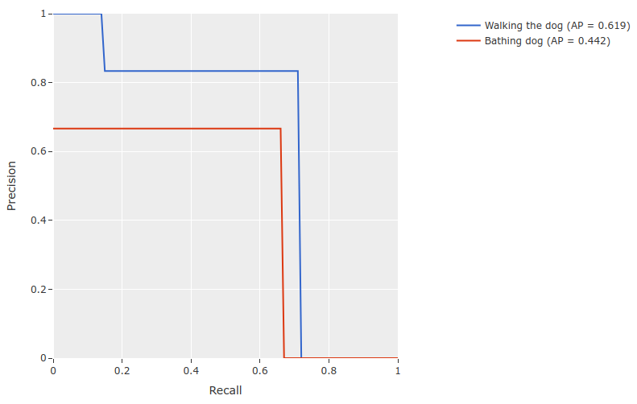

ActivityNet Integration ¶¶
With FiftyOne, you can easily download, visualize, and evaluate on the ActivityNet dataset!

Loading the ActivityNet dataset ¶¶
The FiftyOne Dataset Zoo provides support for loading both the ActivityNet 100 and ActivityNet 200 datasets.
Like all other zoo datasets, you can use
load_zoo_dataset() to download
and load an ActivityNet split into FiftyOne:
import fiftyone as fo
import fiftyone.zoo as foz
# Download and load 10 samples from the validation split of ActivityNet 200
dataset = foz.load_zoo_dataset(
"activitynet-200",
split="validation",
max_samples=10,
)
session = fo.launch_app(dataset)
Note
ActivityNet 200 is a superset of ActivityNet 100 so we have made sure to only store one copy of every video on disk. Videos in the ActivityNet 100 zoo directory are used directly by ActivityNet 200.
Partial Downloads ¶¶
In addition, FiftyOne provides parameters that can be used to efficiently download specific subsets of the ActivityNet dataset, allowing you to quickly explore different slices of the dataset without downloading the entire split.
When performing partial downloads, FiftyOne will use existing downloaded data first if possible before resorting to downloading additional data from YouTube.
import fiftyone as fo
import fiftyone.zoo as foz
#
# Load 10 random samples from the validation split
#
# Only the required videos will be downloaded (if necessary).
#
dataset = foz.load_zoo_dataset(
"activitynet-200",
split="validation",
max_samples=10,
shuffle=True,
)
session = fo.launch_app(dataset)
#
# Load 10 samples from the validation split that
# contain the actions "Bathing dog" and "Walking the dog"
# with a maximum duration of 20 seconds
#
# Videos that contain all ``classes`` will be prioritized first, followed
# by videos that contain at least one of the required ``classes``. If
# there are not enough videos matching ``classes`` in the split to meet
# ``max_samples``, only the available videos will be loaded.
#
# Videos will only be downloaded if necessary
#
dataset = foz.load_zoo_dataset(
"activitynet-200",
split="validation",
classes=["Bathing dog", "Walking the dog"],
max_samples=10,
max_duration=20,
)
session.dataset = dataset
The following parameters are available to configure partial downloads of both
ActivityNet 100 and ActivityNet 200 by passing them to
load_zoo_dataset():
-
split ( None) and splits ( None): a string or list of strings, respectively, specifying the splits to load. Supported values are
("train", "test", "validation"). If none are provided, all available splits are loaded -
source_dir ( None): the directory containing the manually downloaded ActivityNet files used to avoid downloading videos from YouTube
-
classes ( None): a string or list of strings specifying required classes to load. If provided, only samples containing at least one instance of a specified class will be loaded
-
max_duration ( None): only videos with a duration in seconds that is less than or equal to the
max_durationwill be downloaded. By default, all videos are downloaded -
copy_files ( True): whether to move (False) or create copies (True) of the source files when populating
dataset_dir. This is only applicable when asource_diris provided -
num_workers ( None): the number of processes to use when downloading individual videos. By default,
multiprocessing.cpu_count()is used -
shuffle ( False): whether to randomly shuffle the order in which samples are chosen for partial downloads
-
seed ( None): a random seed to use when shuffling
-
max_samples ( None): a maximum number of samples to load per split. If
classesare also specified, only up to the number of samples that contain at least one specified class will be loaded. By default, all matching samples are loaded
Full Split Downloads ¶¶
Many videos have been removed from YouTube since the creation of ActivityNet. As a result, you must first download the official source files from the ActivityNet maintainers in order to load a full split into FiftyOne.
To download the source files, you must fill out this form.
After downloading the source files, they can be loaded into FiftyOne like so:
import fiftyone as fo
import fiftyone.zoo as foz
source_dir = "/path/to/dir-with-activitynet-files"
# Load the entire ActivityNet 200 dataset into FiftyOne
dataset = foz.load_zoo_dataset("activitynet-200", source_dir=source_dir)
session = fo.launch_app(dataset)
where source_dir contains the source files in the following format:
source_dir/
missing_files.zip
missing_files_v1-2_test.zip
missing_files_v1-3_test.zip
v1-2_test.tar.gz
v1-2_train.tar.gz
v1-2_val.tar.gz
v1-3_test.tar.gz
v1-3_train_val.tar.gz
If you have already decompressed the archives, that is okay too:
source_dir/
missing_files/
v_<id>.<ext>
...
missing_files_v1-2_test/
v_<id>.<ext>
...
missing_files_v_1-3_test/
v_<id>.<ext>
...
v1-2/
train/
v_<id>.<ext>
...
val/
...
test/
...
v1-3/
train_val/
v_<id>.<ext>
...
test/
...
If you are only interested in loading specific splits into FiftyOne, the files for the other splits do not need to be present.
Note
When load_zoo_dataset()
is called with the source_dir parameter, the contents are copied (or
moved, if copy_files=False) into the zoo dataset’s backing directory.
Therefore, future use of the loaded dataset or future calls to
load_zoo_dataset()
will not require the source_dir parameter.
ActivityNet-style evaluation ¶¶
The evaluate_detections()
method provides builtin support for running
ActivityNet-style evaluation.
ActivityNet-style evaluation is the default method when evaluating
TemporalDetections labels, but you can also explicitly request it by setting
the method parameter to "actvitynet".
Note
FiftyOne’s implementation of ActivityNet-style evaluation matches the reference implementation available via the ActivityNet API.
Overview ¶¶
When running ActivityNet-style evaluation using
evaluate_detections():
-
Predicted and ground truth segments are matched using a specified IoU threshold (default = 0.50). This threshold can be customized via the
iouparameter -
By default, only segments with the same
labelwill be matched. Classwise matching can be disabled by passingclasswise=False -
mAP is computed by averaging over the same range of IoU values used by COCO
When you specify an eval_key parameter, a number of helpful fields will be
populated on each sample and its predicted/ground truth segments:
- True positive (TP), false positive (FP), and false negative (FN) counts for the each sample are saved in top-level fields of each sample:
TP: sample.<eval_key>_tp
FP: sample.<eval_key>_fp
FN: sample.<eval_key>_fn
- The fields listed below are populated on each individual temporal detection segment; these fields tabulate the TP/FP/FN status of the segment, the ID of the matching segment (if any), and the matching IoU:
TP/FP/FN: segment.<eval_key>
ID: segment.<eval_key>_id
IoU: segment.<eval_key>_iou
Note
See ActivityNetEvaluationConfig for complete descriptions of the optional
keyword arguments that you can pass to
evaluate_detections()
when running ActivityNet-style evaluation.
Example evaluation ¶¶
The example below demonstrates ActivityNet-style temporal detection evaluation on the ActivityNet 200 dataset:
import random
import fiftyone as fo
import fiftyone.zoo as foz
from fiftyone import ViewField as F
# Load subset of ActivityNet 200
classes = ["Bathing dog", "Walking the dog"]
dataset = foz.load_zoo_dataset(
"activitynet-200",
split="validation",
classes=classes,
max_samples=10,
)
print(dataset)
# Generate some fake predictions for this example
random.seed(51)
dataset.clone_sample_field("ground_truth", "predictions")
for sample in dataset:
for det in sample.predictions.detections:
det.support[0] += random.randint(-10,10)
det.support[1] += random.randint(-10,10)
det.support[0] = max(det.support[0], 1)
det.support[1] = max(det.support[1], det.support[0] + 1)
det.confidence = random.random()
det.label = random.choice(classes)
sample.save()
# Evaluate the segments in the `predictions` field with respect to the
# segments in the `ground_truth` field
results = dataset.evaluate_detections(
"predictions",
gt_field="ground_truth",
eval_key="eval",
)
# Print a classification report for the classes
results.print_report(classes=classes)
# Print some statistics about the total TP/FP/FN counts
print("TP: %d" % dataset.sum("eval_tp"))
print("FP: %d" % dataset.sum("eval_fp"))
print("FN: %d" % dataset.sum("eval_fn"))
# Create a view that has samples with the most false positives first, and
# only includes false positive segments in the `predictions` field
view = (
dataset
.sort_by("eval_fp", reverse=True)
.filter_labels("predictions", F("eval") == "fp")
)
# Visualize results in the App
session = fo.launch_app(view=view)
precision recall f1-score support
Bathing dog 0.50 0.40 0.44 5
Walking the dog 0.50 0.60 0.55 5
micro avg 0.50 0.50 0.50 10
macro avg 0.50 0.50 0.49 10
weighted avg 0.50 0.50 0.49 10

mAP and PR curves ¶¶
You can compute mean average precision (mAP) and precision-recall (PR) curves
for your segments by passing the compute_mAP=True flag to
evaluate_detections():
Note
All mAP calculations are performed according to the ActivityNet evaluation protocol.
import random
import fiftyone as fo
import fiftyone.zoo as foz
# Load subset of ActivityNet 200
classes = ["Bathing dog", "Walking the dog"]
dataset = foz.load_zoo_dataset(
"activitynet-200",
split="validation",
classes=classes,
max_samples=10,
)
print(dataset)
# Generate some fake predictions for this example
random.seed(51)
dataset.clone_sample_field("ground_truth", "predictions")
for sample in dataset:
for det in sample.predictions.detections:
det.support[0] += random.randint(-10,10)
det.support[1] += random.randint(-10,10)
det.support[0] = max(det.support[0], 1)
det.support[1] = max(det.support[1], det.support[0] + 1)
det.confidence = random.random()
det.label = random.choice(classes)
sample.save()
# Performs an IoU sweep so that mAP and PR curves can be computed
results = dataset.evaluate_detections(
"predictions",
gt_field="ground_truth",
eval_key="eval",
compute_mAP=True,
)
print(results.mAP())
# 0.367
plot = results.plot_pr_curves(classes=classes)
plot.show()

Confusion matrices ¶¶
You can also easily generate confusion matrices for the results of ActivityNet-style evaluations.
In order for the confusion matrix to capture anything other than false
positive/negative counts, you will likely want to set the
classwise
parameter to False during evaluation so that predicted segments can be
matched with ground truth segments of different classes.
import random
import fiftyone as fo
import fiftyone.zoo as foz
# Load subset of ActivityNet 200
classes = ["Bathing dog", "Grooming dog", "Grooming horse", "Walking the dog"]
dataset = foz.load_zoo_dataset(
"activitynet-200",
split="validation",
classes=classes,
max_samples=20,
)
print(dataset)
# Generate some fake predictions for this example
random.seed(51)
dataset.clone_sample_field("ground_truth", "predictions")
for sample in dataset:
for det in sample.predictions.detections:
det.support[0] += random.randint(-10,10)
det.support[1] += random.randint(-10,10)
det.support[0] = max(det.support[0], 1)
det.support[1] = max(det.support[1], det.support[0] + 1)
det.confidence = random.random()
det.label = random.choice(classes)
sample.save()
# Perform evaluation, allowing objects to be matched between classes
results = dataset.evaluate_detections(
"predictions", gt_field="ground_truth", classwise=False
)
# Generate a confusion matrix for the specified classes
plot = results.plot_confusion_matrix(classes=classes)
plot.show()

Note
Did you know? Confusion matrices can be
attached to your Session object and dynamically explored using FiftyOne’s
interactive plotting features!
ActivityNet Challenge ¶¶
Since FiftyOne’s implementation of ActivityNet-style evaluation matches the reference implementation from the ActivityNet API used in the ActivityNet challenges. you can use it to compute the official mAP for your model while also enjoying the benefits of working in the FiftyOne ecosystem, including using views to manipulate your dataset and visually exploring your model’s predictions in the FiftyOne App!
The example snippet below loads the ActivityNet 200 dataset and runs the official ActivityNet evaluation protocol on some mock model predictions:
import random
import fiftyone as fo
import fiftyone.zoo as foz
# Load subset of ActivityNet 200
classes = ["Bathing dog", "Walking the dog"]
dataset = foz.load_zoo_dataset(
"activitynet-200",
split="validation",
classes=classes,
max_samples=10,
)
# Generate some fake predictions for this example
random.seed(51)
dataset.clone_sample_field("ground_truth", "predictions")
for sample in dataset:
for det in sample.predictions.detections:
det.support[0] += random.randint(-10,10)
det.support[1] += random.randint(-10,10)
det.support[0] = max(det.support[0], 1)
det.support[1] = max(det.support[1], det.support[0] + 1)
det.confidence = random.random()
det.label = random.choice(classes)
sample.save()
# Evaluate predictions via the official ActivityNet protocol
results = dataset.evaluate_detections(
"predictions",
gt_field="ground_truth",
compute_mAP=True,
)
# The official mAP for the results
print(results.mAP())
Note
Check out this recipe to learn how to add your model’s predictions to a FiftyOne Dataset.
mAP protocol ¶¶
The ActivityNet mAP protocol is similar to COCO-style mAP, with the primary difference being a different IoU computation using temporal segments, a lack of crowds, and the way interpolation of precision values is handled.
The steps to compute ActivityNet-style mAP are detailed below.
Preprocessing
-
Filter ground truth and predicted segments by class (unless
classwise=False) -
Sort predicted segments by confidence score so high confidence segments are matched first
-
Compute IoU between every ground truth and predicted segment within the same class (and between classes if
classwise=False) in each video
Matching
Once IoUs have been computed, predictions and ground truth segments are matched to compute true positives, false positives, and false negatives:
-
For each class, start with the highest confidence prediction, match it to the ground truth segment that it overlaps with the highest IoU. A prediction only matches if the IoU is above the specified
iouthreshold -
If a prediction maximally overlaps with a ground truth segment that has already been matched (by a higher confidence prediction), the prediction is matched with the next highest IoU ground truth segment
Computing mAP
-
Compute matches for 10 IoU thresholds from 0.5 to 0.95 in increments of 0.05
-
The next 6 steps are computed separately for each class and IoU threshold:
-
Construct a boolean array of true positives and false positives, sorted by confidence
-
Compute the cumulative sum of the true positive and false positive array
-
Compute precision by elementwise dividing the TP-FP-sum array by the total number of predictions up to that point
-
Compute recall by elementwise dividing TP-FP-sum array by the number of ground truth segments for the class
-
Ensure that precision is a non-increasing array
-
(Unlike COCO) DO NOT interpolate precision values onto an 101 evenly spaced recall values. In FiftyOne, this step is performed anyway with the results stored separately for the purpose of plotting PR curves. It is not factored into mAP calculation
-
For every class that contains at least one ground truth segment, compute the average precision (AP) by averaging the precision values over all 10 IoU thresholds. Then compute mAP by averaging the per-class AP values over all classes